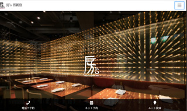
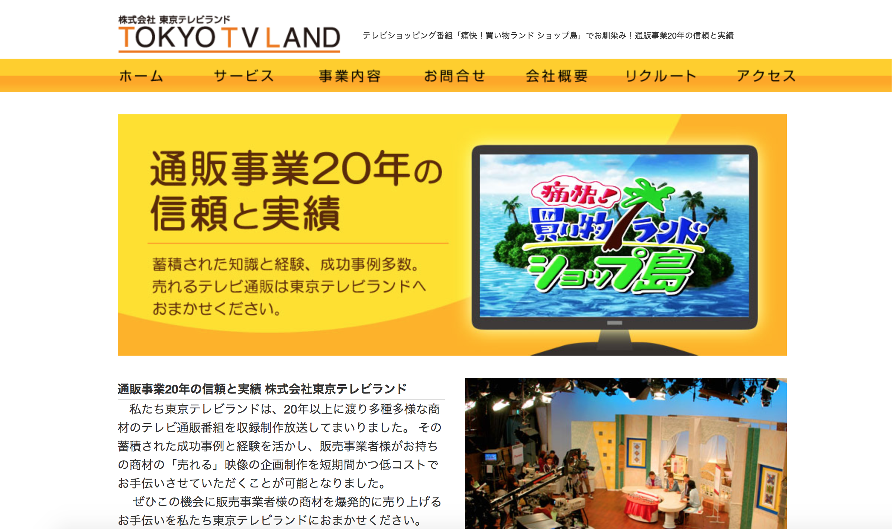
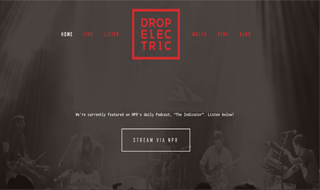
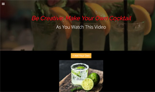

- Biography
-
My career and life is influenced mainly by the presence of music, yet, in a hindsight, I can think of drawing pictures from young age play a good role as well. Greatly, I think the feeling left out in a crowd, has had great impact on my creativity.
I love creating and recreating the music that I hear in my head, and the visual image (whether still image or video) that I have in my head.
Having the experience of creating a career fair video in class that was used for broadcast in Indiana University, I've also had that same kind of success translate to my professional career: contributing to the sales through creation of a broadcast video and also contributing greatly to promoting sushi store to foreign customers through Live Japan. I love the creative process that goes behindEducational Background:
Indiana University - Bloomington, IN
Bachelor of Arts in Telecommunications May 2007University of Illinois - Urbana/Champaign, IL
Concentration in Jazz Studies Aug. 2002 - May 2004New Trier High School - Winnetka, IL
Graduated in June 2002
- Skills
-
Languages:
Native level in both English and JapaneseSoftware:
Adobe (DreamWeaver, Photoshop, Illustrator, Premiere), Figma, Terminal, Sublime Text, Finale, GarageBand, Logic Pro, Microsoft Word/Excel/Power PointMusical Instruments:
Piano, Ukulele, PercussionOther "Creative" Skills:
perfect pitch, drawing, creating music on the spot, making sushi (fileting fishes)
- Programming Languages
-
「さあ、」ジョバンニは困って、もじもじしていましたら、カムパネルラは、わけもないという風で、小さな鼠いろの切符を出しました。ジョバンニは、すっかりあわててしまって、もしか上着のポケットにでも、入っていたかとおもいながら、手を入れて見ましたら、何か大きな畳んだ紙きれにあたりました。こんなもの入っていたろうかと思って、急いで出してみましたら、それは四つに折ったはがきぐらいの大きさの緑いろの紙でした。車掌が手を出しているもんですから何でも構わない、やっちまえと思って渡しましたら、車掌はまっすぐに立ち直って叮寧にそれを開いて見ていました。そして読みながら上着のぼたんやなんかしきりに直したりしていましたし燈台看守も下からそれを熱心にのぞいていましたから、ジョバンニはたしかにあれは証明書か何かだったと考えて少し胸が熱くなるような気がしました。
「これは三次空間の方からお持ちになったのですか。」車掌がたずねました。「何だかわかりません。」もう大丈夫だと安心しながらジョバンニはそっちを見あげてくつくつ笑いました。「よろしゅうございます。南十字へ着きますのは、次の第三時ころになります。」車掌は紙をジョバンニに渡して向うへ行きました。
Web Design/Front-End/Development
-
Cross-Border-Bridge
-
Bous
Project: Bous
Role: Planning, Photoshop, Javascript, Responsive Design
Updated the website from old, while working as sushi chef for the company as well. Because I worked one day a week (sometimes two days) at the main office, my role was limited.
-
Tokyo TV Land
Project: Tokyo TV Land
Role: Photoshop
First ever design for company's website - though I was mostly creating videos, I was asked upon to design the website with only Photoshop, which led to learning coding of HTML, CSS.
-
Smile TV
-
Drop Electric
Project: Drop Electric
Role: Photoshop, Javascript, Responsive Design
Website I helped update for my brother's band based in Washington DC. Worked together through use of e-mail and chats, working while living in Japan.
-
Mr. Cocktail
Project: Mr. Cocktail
Role: Ruby on Rails, HTML, CSS, Responsive Design
Created this web app and the site through learning web development at coding bootcamp at Le Wagon - Tokyo (Batch #226). Though I still have hard time with Ruby and Ruby on Rails, I need to keep studying and creating more web apps to get accustomed to Ruby.
click here for Github
Music Composition/Arranging/Performance
pdf file of scores
- Swing for the Moment
- Day at the Ball Park
- 世界に一つだけの花(Only Flower in the World)
Miscellaneous: Videos and Other "Creative" Skills
My first job out of college, and working in Japan was in the field of broadcast industry. Two videos that I created, and got the role as the Video Creator was for a skin care product, Rice Force, and also Green Juice (health product), got acclaim for high sales. I've also created e-commerce videos as a assistant director, as I was gaining experience creating videos.